Where to find the roster
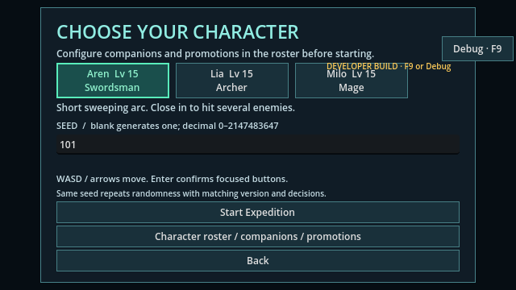
Character selection contains the roster entry. This is ordinary game UI, not a debug-only character list.
Try it: New Expedition → Character roster / companions / promotions
ABYSS EXPEDITION · MILESTONE 2 · 15 OCTOBER 2026
Actual screenshots mapped to the ten rows in your requirements table. Each example includes what to look for and how to reach it in the game.
These are real game captures, not mockups. Captured from the current exported developer build, using prepared levels, enemies and outcomes in isolated test profiles. Screenshots are unmodified; combat closeups simply magnify the same image.
Visible does not mean fully proven by a still. Screens show the UI and captured state. Damage formulas, AI movement, duplicate-save prevention and crash safety are supported by behavior tests, described separately below. Current combat art and effects remain geometric placeholders.
Debug edits remain in the sandbox. Normal roster choices apply when you save the party and start the next run. Full developer-panel guide.
| Requirement | Feature | Status | What you can see |
|---|---|---|---|
| FR-015 | Character roster | Implemented | Visible in the normal menu |
| FR-016 | Permanent character levels | Implemented | Visible in HUD and debug stats |
| FR-017 | Permanent expedition rewards | Implemented | Visible on the results screen |
| FR-018 | Promotion confirmation | Implemented | Three screens; two choices each |
| FR-019 | Six promoted branches | Implemented | Saved class plus real attack frames |
| FR-020 | Character-specific passives | Implemented | Names and stats visible; damage behavior tested |
| FR-021 | Up to two AI companions | Implemented | Three party configurations |
| FR-022 | Companion combat and downing | Implemented | Downed state visible in party HUD |
| FR-023 | Save durability and Retry | Implemented | Real save-error / recovery interface |
| SC-005 | Progress retained after reopening | Implemented | Reopened application and exact state checks |
Visible in the normal menu
Look for the active/companion checkmarks, XP, levels, current class, passive names and promotion-item count. The entry is New Expedition → Character roster / companions / promotions.

Character selection contains the roster entry. This is ordinary game UI, not a debug-only character list.
Try it: New Expedition → Character roster / companions / promotions
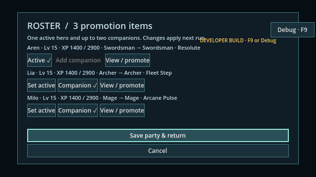
Aren is active; Lia and Milo are both selected companions. Each row shows XP, permanent level, base/current class and passive. Promotion items appear in the heading.
Try it: New Expedition → Character roster / companions / promotions; choose roles, then Save party & return
Visible in HUD and debug stats
These four Aren examples show levels 1, 14, 15 and 30. Base max HP rises 250 → 315 → 320 → 395; base attack rises 36 → 45.36 → 46.08 → 56.88. Run Lv stays separate. Level 15 permits promotion; level 30 is the permanent cap.
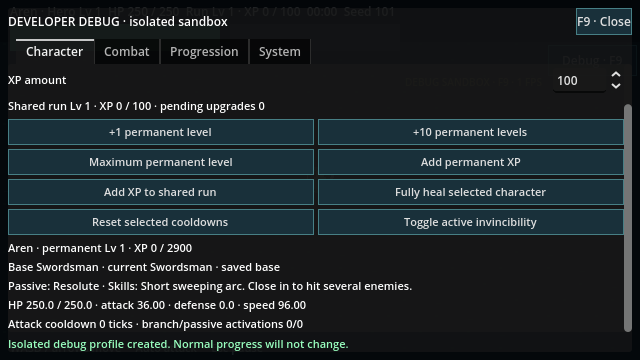
Controlled Aren example: permanent XP 0 / 2900; max HP 250; damage 36.00. Shared Run Lv remains 1. Level 15 unlocks promotion eligibility; level 30 is the cap.
Try it: Debug → Character → +1 / +10 / Maximum permanent level; scroll down for live stats
Controlled Aren example: permanent XP 1300 / 2900; max HP 315; damage 45.36. Shared Run Lv remains 1. Level 15 unlocks promotion eligibility; level 30 is the cap.
Try it: Debug → Character → +1 / +10 / Maximum permanent level; scroll down for live stats
Controlled Aren example: permanent XP 1400 / 2900; max HP 320; damage 46.08. Shared Run Lv remains 1. Level 15 unlocks promotion eligibility; level 30 is the cap.
Try it: Debug → Character → +1 / +10 / Maximum permanent level; scroll down for live stats
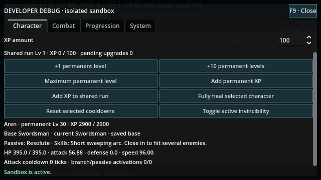
Controlled Aren example: permanent XP 2900 / 2900; max HP 395; damage 56.88. Shared Run Lv remains 1. Level 15 unlocks promotion eligibility; level 30 is the cap.
Try it: Debug → Character → +1 / +10 / Maximum permanent level; scroll down for live stats
Visible on the results screen
Victory gives 20 XP per completed minute plus 100 XP and one promotion item. Defeat gives minute XP only; abandonment gives zero. The Saved line identifies the reward. Selected companions share permanent XP even if downed; unselected heroes are excluded. Duplicate settlement prevention and exact minute boundaries require tests.
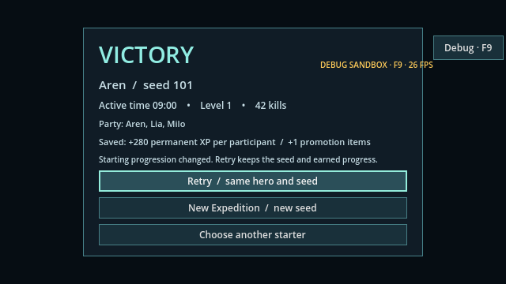
Controlled terminal example at 9:00: +280 permanent XP per selected participant, +1 items. This uses the real freeze/settlement/results route; it is not a recording of a full natural playthrough.
Try it: Finish an expedition; read the Saved line on the results screen
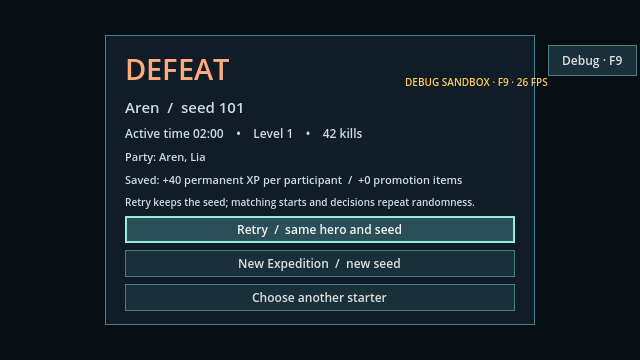
Controlled terminal example at 2:00: +40 permanent XP per selected participant, +0 items. This uses the real freeze/settlement/results route; it is not a recording of a full natural playthrough.
Try it: Finish an expedition; read the Saved line on the results screen
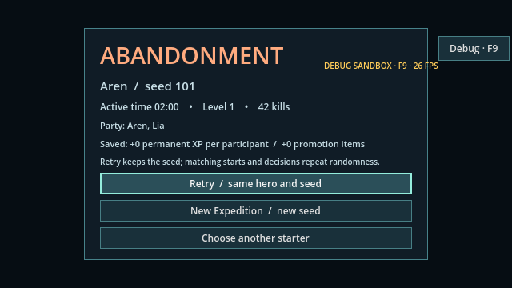
Controlled terminal example at 2:00: +0 permanent XP per selected participant, +0 items. This uses the real freeze/settlement/results route; it is not a recording of a full natural playthrough.
Try it: Finish an expedition; read the Saved line on the results screen
Three screens; two choices each
Aren has Swordmaster / Abyss Swordsman; Lia has Sharpshooter / Star Hunter; Milo has Elemental Sage / Void Caster. Promotion needs permanent level 15 and one item. Confirm saves the branch and spends one item. Cancel spends nothing. Failed-write Retry is shown later.
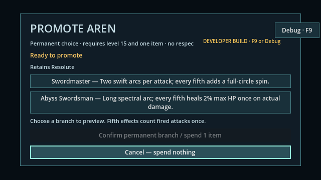
Both branches are selectable at level 15 with an item. Confirmation spends one item; Cancel spends nothing. The retained character passive is named here.
Try it: Roster → View / promote beside Aren
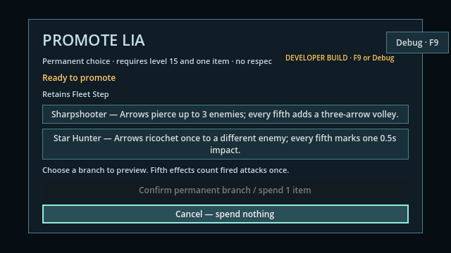
Both branches are selectable at level 15 with an item. Confirmation spends one item; Cancel spends nothing. The retained character passive is named here.
Try it: Roster → View / promote beside Lia
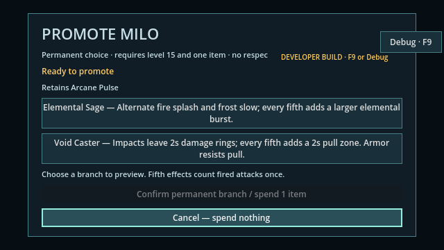
Both branches are selectable at level 15 with an item. Confirmation spends one item; Cancel spends nothing. The retained character passive is named here.
Try it: Roster → View / promote beside Milo
Saved class plus real attack frames
For each branch, compare the saved roster class with its attack frame. Expand the magnified view: current effects are small geometric placeholders, not finished character animations. These prepared fifth-attack examples make the differences easier to identify.
The roster's base → current class field identifies the committed branch. The character passive remains the same after promotion.
Try it: Promote through the roster, then return to the roster
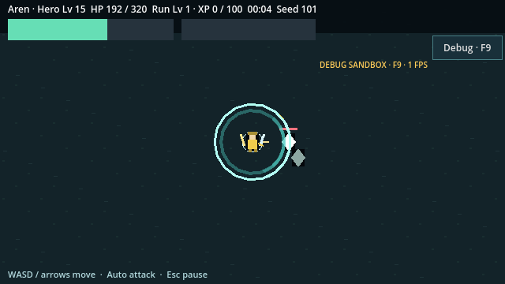
Two swift arcs per attack; every fifth adds a full-circle spin. This controlled frame is frozen at the fifth attack; use the magnified view to inspect the small placeholder effects.
Try it: Debug → Progression → grant requirements → Open existing promotion UI; close debug and let attacks fire automatically
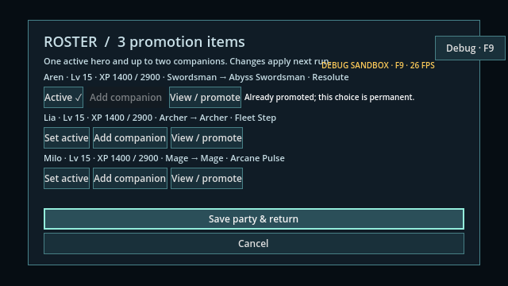
The roster's base → current class field identifies the committed branch. The character passive remains the same after promotion.
Try it: Promote through the roster, then return to the roster
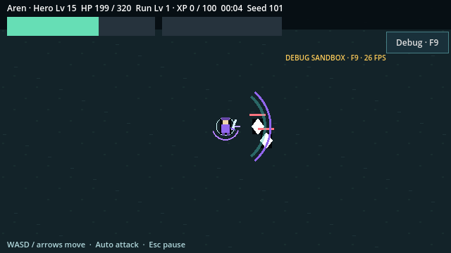
Long spectral arc; every fifth heals 2% max HP once on actual damage. Actual HP in this example: 192.0 → 198.4 (HUD rounds upward). This controlled frame is frozen at the fifth attack; use the magnified view to inspect the small placeholder effects.
Try it: Debug → Progression → grant requirements → Open existing promotion UI; close debug and let attacks fire automatically
The roster's base → current class field identifies the committed branch. The character passive remains the same after promotion.
Try it: Promote through the roster, then return to the roster
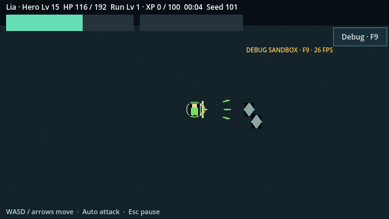
Arrows pierce up to 3 enemies; every fifth adds a three-arrow volley. This controlled frame is frozen at the fifth attack; use the magnified view to inspect the small placeholder effects.
Try it: Debug → Progression → grant requirements → Open existing promotion UI; close debug and let attacks fire automatically
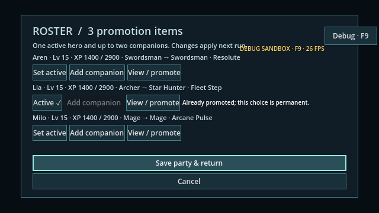
The roster's base → current class field identifies the committed branch. The character passive remains the same after promotion.
Try it: Promote through the roster, then return to the roster
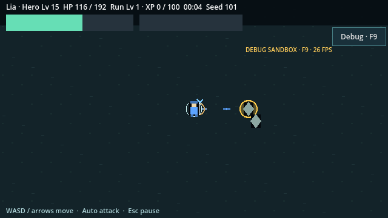
Arrows ricochet once to a different enemy; every fifth marks one 0.5s impact. This controlled frame is frozen at the fifth attack; use the magnified view to inspect the small placeholder effects.
Try it: Debug → Progression → grant requirements → Open existing promotion UI; close debug and let attacks fire automatically
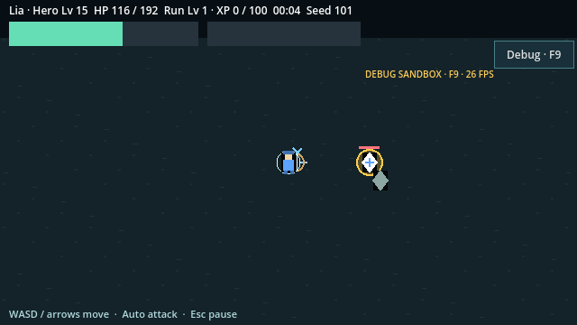
The arrow has changed direction toward a different target. A single still cannot establish the complete ricochet/mark sequence; behavior checks verify those transitions.
Try it: Keep two enemies within range; observe the star arrow after its first hit
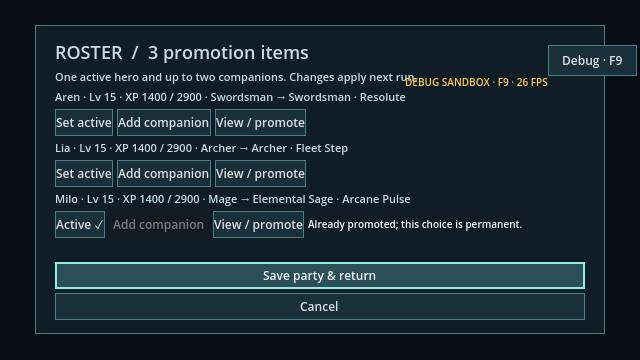
The roster's base → current class field identifies the committed branch. The character passive remains the same after promotion.
Try it: Promote through the roster, then return to the roster
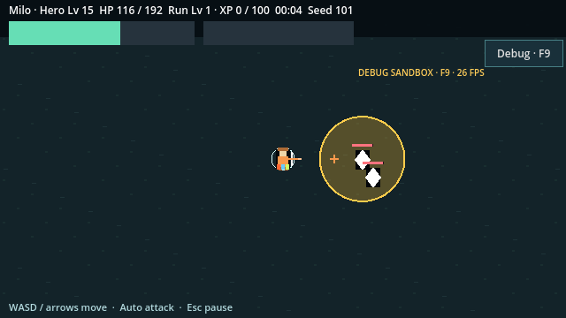
Alternate fire splash and frost slow; every fifth adds a larger elemental burst. This controlled frame is frozen at the fifth attack; use the magnified view to inspect the small placeholder effects.
Try it: Debug → Progression → grant requirements → Open existing promotion UI; close debug and let attacks fire automatically
The roster's base → current class field identifies the committed branch. The character passive remains the same after promotion.
Try it: Promote through the roster, then return to the roster
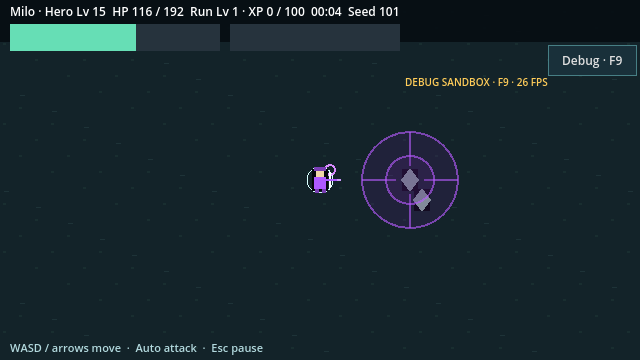
Impacts leave 2s damage rings; every fifth adds a 2s pull zone. Armor resists pull. This controlled frame is frozen at the fifth attack; use the magnified view to inspect the small placeholder effects.
Try it: Debug → Progression → grant requirements → Open existing promotion UI; close debug and let attacks fire automatically
Names and stats visible; damage behavior tested
Aren: Resolute, 10% less incoming damage after defense (minimum 1). Lia: Fleet Step, +10% starting speed. Milo: Arcane Pulse, +50% damage on each fifth fired attack. Passives survive promotion. There is no dedicated passive effect icon or animation; a screenshot cannot prove the damage formula or counter independence.
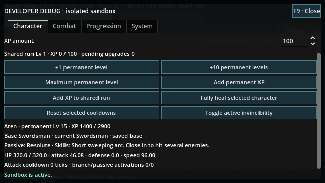
Resolute reduces incoming damage by 10% after defense, with minimum eligible damage 1. There is no dedicated passive animation or buff panel; damage math requires behavior tests rather than screenshots.
Try it: Roster lists the passive; Debug → Character → select hero → scroll down for passive and live stats
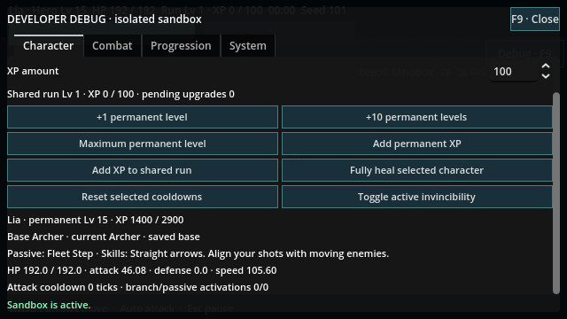
Fleet Step increases starting movement speed by 10%: 96 → 105.6, visible in these live stats. There is no dedicated passive animation or buff panel; damage math requires behavior tests rather than screenshots.
Try it: Roster lists the passive; Debug → Character → select hero → scroll down for passive and live stats
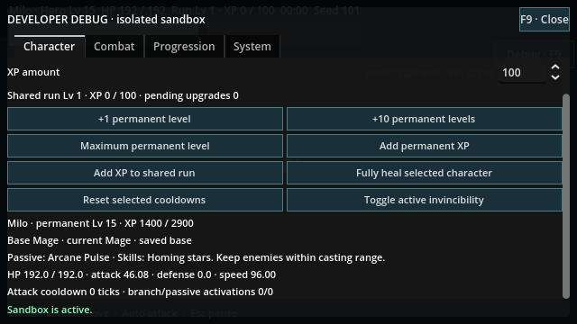
Arcane Pulse increases every fifth fired attack's damage by 50%; its counter is independent of profession fifth effects. There is no dedicated passive animation or buff panel; damage math requires behavior tests rather than screenshots.
Try it: Roster lists the passive; Debug → Character → select hero → scroll down for passive and live stats
Three party configurations
These captures show zero, one and two companions from saved roster choices. Two companions occupy distinct formation slots and have separate HP readouts. A still frame shows the deployed party, while follow priority, target selection and blocked/separated recovery are established by behavior tests.
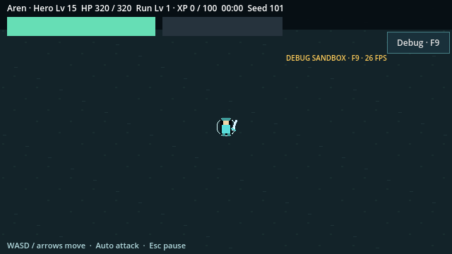
Saved roster selection is instantiated in combat. The lower-left HUD lists living companion HP; each companion occupies a separate formation slot. Follow/chase priority and safe recovery are verified by behavior tests.
Try it: Roster → select 0–2 companions → Save party & return → Start Expedition
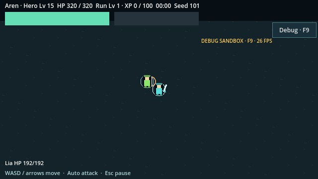
Saved roster selection is instantiated in combat. The lower-left HUD lists living companion HP; each companion occupies a separate formation slot. Follow/chase priority and safe recovery are verified by behavior tests.
Try it: Roster → select 0–2 companions → Save party & return → Start Expedition

Saved roster selection is instantiated in combat. The lower-left HUD lists living companion HP; each companion occupies a separate formation slot. Follow/chase priority and safe recovery are verified by behavior tests.
Try it: Roster → select 0–2 companions → Save party & return → Start Expedition
Downed state visible in party HUD
A companion can be downed while the active hero continues. The body pose and DOWNED label are visible. Half outgoing damage, full healing/defense, separate 45-tick immunity, living-only shared upgrades, active-hero defeat and full restoration next run are implemented behavior covered by tests; this one frame does not establish all of them.
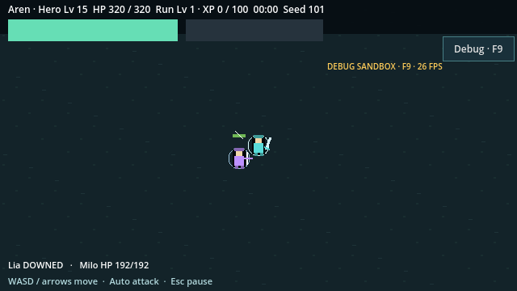
Lia is visibly DOWNED in the party HUD and uses the downed body pose. Aren and Milo remain alive. Companions do not revive during this run; starting a new run restores them.
Try it: Take damage on a companion; look at the lower-left party HUD
Real save-error / recovery interface
A controlled publication failure opens the real save-error screen. Retry commits the same pending action once. The roster afterward shows the committed XP and saved party. Checksum/version validation, interrupted writes and two-process writer-lock behavior are backend guarantees verified through tests, not through the appearance of a screen.
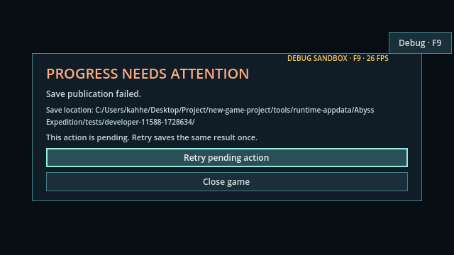
A deliberately failed write in an isolated test profile opens the real error screen. Retry preserves the same pending action. Checksum validation, interruptions and two-process locks are backend behavior, not visible proof in this image.
Try it: Appears automatically if a save fails; choose Retry pending action
After Retry, Aren is level 2 / 100 XP and the party is preserved. The action is committed once, not added twice.
Try it: Retry pending action → roster returns with committed progress
Reopened application and exact state checks
The final roster is loaded by a new application instance from the same isolated test profile. Twenty exact payload close/reopen comparisons passed during capture. A screenshot shows the retained state; the comparisons establish that the complete payload matched.
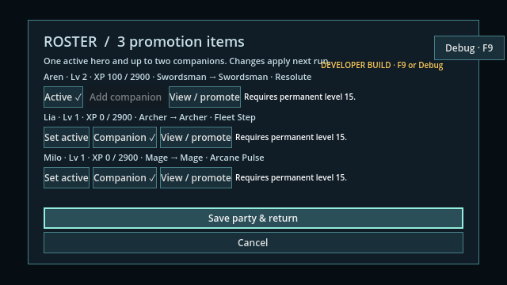
A new app instance reopened the saved profile: Aren level 2 / 100 XP, Lia and Milo still companions. Twenty exact payload close/reopen comparisons passed alongside this screenshot.
Try it: Save party → close game → open the same profile → Character roster / companions / promotions
This capture run completed 111 checks with zero failures and produced 35 screenshots. It checked real attack objects, reward commitments, level scaling, downing, Retry and twenty saved-payload reopen comparisons alongside the images.
The preceding full validation passed 916 checks, including M1/M2 regression suites and source/exported native input checks. No gameplay implementation was changed to create this gallery. Automated fixtures are reproducible; these captures are not a claim of exhaustive human-play or performance acceptance.